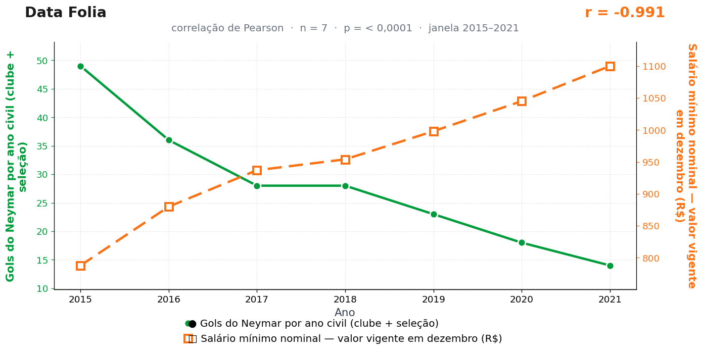

Post de 06/07/2026

A teoria
Toda política pública precisa de compensação. No mecanismo Data Folia, o Brasil equilibra o salário mínimo usando o estoque anual de gols de Neymar.
Quando o piso salarial sobe, a bola passa a carregar encargos, adicionais e uma contribuição sobre o drible. Cada pedalada cruza uma mesa de repartição antes de chegar à área.
Neymar enfrenta zagueiros e contabilidade nacional ao mesmo tempo. O salário avança no Diário Oficial, o gol negocia espaço no orçamento, e o ângulo fica mais caro a cada reajuste.
Nosso setor de tributos calculou a alíquota implícita: a cada R$ 52 de reajuste, um gol a menos. O memorando foi arquivado depois que o autor riu no meio da própria apresentação — mas ninguém encontrou erro de conta.
A teoria é ficção; a correlação é real: r = −0,99 (n = 7, p < 0,001).
Os dados por trás

- Gols do Neymar por ano civil (clube + seleção) — 7 pontos anuais, período 2015–2021. Fonte: Transfermarkt / Wikipedia.
- Salário mínimo nominal — valor vigente em dezembro (R$) — 7 pontos anuais, período 2015–2021. Fonte: BCB — SGS 1619.
Como as correlações deste site são encontradas — e por que você não deve confiar nelas — está explicado na nossa metodologia.
Por que isso acontece?
O salário mínimo nominal sobe todo ano por construção legal: é uma série quase perfeitamente monotônica, uma escada que nunca desce. Qualquer variável que tenha caído entre 2015 e 2021 — e os gols anuais de Neymar caíram, de 49 para 14, entre lesões e mudanças de função — vai apresentar correlação fortíssima com ela. O r = −0,99 é consequência da forma das curvas, não de um encontro entre o Diário Oficial e a grande área.
Séries com tendência determinística correlacionam com praticamente tudo. É por isso que análises econômicas sérias não comparam níveis nominais diretamente: elas deflacionam, tiram diferenças ano a ano ou removem a tendência antes de calcular qualquer correlação. Feito isso, esta relação evapora.
O p-valor minúsculo (0,00001) piora a ilusão: o teste de Pearson assume observações independentes, e pontos de uma série com tendência não são independentes — cada ano carrega o anterior. O p real, corrigido para isso, seria ordens de magnitude maior. Aqui, ele é só um adereço de rigor.
Post de 06/07/2026 · publicado também no Instagram @datafolia.